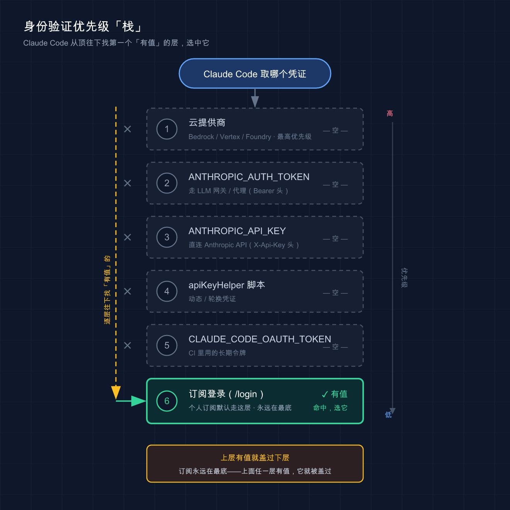

📚 系列导航：上一篇 03 · 它是怎么工作的 拆了代理循环——Claude Code 怎么「想 → 做 → 看」。这一篇解决它跑起来的前提：用什么身份连上模型。下一篇讲接第三方 / 国产模型。
2026 年 6 月，Claude Code 官方文档里列了整整 6 种身份验证方式，从订阅登录到云厂商凭证，优先级一层压一层。
这里有个很常见的坑，我自己就栽过。我那会儿图省事，早年在 .zshrc 里 export 过一个 ANTHROPIC_API_KEY，后来买了 Max 订阅、/login 登录得好好的，结果某天翻 Console 账单，发现 API 这边在持续扣钱——明明以为自己一直在用订阅额度。查了半天才搞明白：只要环境里有 API key，它的优先级就压过订阅。
说白了，「登进去了」不等于「用对了身份」。这一篇就把这件事讲透。
看完这一篇，你会拿到：
- 订阅登录 vs API key 两条路的适用场景对照表，知道自己该走哪条
- 三种「在哪配、怎么改」的落地姿势（命令行登录 / 环境变量 / settings.json），以及 Mac / Windows / Linux 的差异
- 一套自查命令：用
/status确认「我现在到底在用哪个身份、哪个模型」，再也不糊里糊涂被扣费
01 两种身份：订阅登录 vs API key
先给结论：个人自己用，选订阅登录；要嵌进脚本 / CI / 团队按用量结算，才用 API key。
Claude Code 连模型，本质要回答一个问题：「凭什么让我用？」 这就是身份验证（authentication）——你得证明自己是谁、用谁的额度。官方支持的方式有好几种，但对小白来说，先抓住最主流的两条路就够。
类比：进健身房。 订阅登录就像办了张月卡——刷脸进门，一个月内随便练，不按次计费；API key 则像按次买的门票——每进一次扣一张，用多少付多少。月卡适合天天去的人，门票适合偶尔来一次、或者帮朋友带人进场（脚本、自动化）的场景。
两条路的区别，一张表说清：
| 维度 | 订阅登录（Claude.ai 账户） | API key（Console / 环境变量） |
|---|---|---|
| 怎么连 | 终端跑 claude，浏览器登录 |
配 ANTHROPIC_API_KEY 环境变量 |
| 怎么计费 | 按月订阅（Pro / Max / Team） | 按 token 用量，从 Console 余额扣 |
| 额度 | 有用量上限，到顶要等刷新 | 充多少用多少，无固定上限 |
| 适合谁 | 个人日常交互式开发 | 脚本 / CI / 团队按量结算 |
| 凭证从哪来 | /login 浏览器授权 |
Claude Console 创建 key |
| 能否无浏览器 | 默认要浏览器（CI 用 setup-token） |
能，纯环境变量即可 |
订阅这边再细分一下，因为后面选模型会用到：
- Claude Pro / Max：个人订阅，用 Claude.ai 账户登录。Pro 偏轻量，Max 额度大、能用上最强模型。
- Claude for Teams / Enterprise：团队套餐，管理员邀请你，统一计费。Enterprise 还能配 SSO、托管策略。
个人项目一律走 Max 订阅登录，省心、不用盯余额；只有往 GitHub Actions 里塞自动化任务时，才单独搞一个 API key（具体到 CI 的玩法第 44 篇再讲）。日常开发别碰 API key，纯属给自己找扣费焦虑。
💡 一句话总结：订阅 = 月卡（个人日常），API key = 门票（脚本/团队按量），先想清楚自己是哪种人，再去配。
02 订阅登录：最省心的那条路
如果你是个人用户、买了 Pro 或 Max，那配置这事儿基本不用配——跑起来登录一下就行。
操作就一步。 装好 Claude Code 后（装机看 02 篇），在终端敲：
claude
首次启动，Claude Code 会自动打开浏览器让你登录 Claude.ai 账户。登录完浏览器会跳回终端，搞定。
几个真实会撞上的情况，提前说：
- 浏览器没自动弹出来？ 在 Claude Code 界面按
c，它会把登录链接复制到剪贴板，你自己粘到浏览器打开。 - 浏览器登录后给了一串「登录代码」、没跳回来？ 把那串代码粘回终端的
Paste code here if prompted提示符处。这种情况常见于 WSL2、SSH 远程会话、容器里——因为浏览器连不到本机的回调端口。 - 想换账号 / 退出登录？ 在 Claude Code 里输入
/logout，下次启动重新登。
登进去的凭证存哪了？ 这点平台不一样，知道了排查问题才不抓瞎：
| 平台 | 凭证存储位置 |
|---|---|
| macOS | 加密的系统钥匙串（Keychain） |
| Linux | ~/.claude/.credentials.json（权限 0600） |
| Windows | %USERPROFILE%\.claude\.credentials.json（继承用户目录权限） |
这些都是 Claude Code 通过 /login / /logout 自动管的，你不用手动碰。我自己在 Mac 上排查登录问题时，照着 Linux 的路子去翻 ~/.claude/.credentials.json，结果死活找不到，一度怀疑没登录成功——原因就在这：macOS 根本没把它放成文件，而是塞进了 Keychain。
💡 一句话总结：订阅用户 「跑
claude→ 浏览器登录」就齐活，凭证 Claude Code 自动存好，别手动去翻。
03 API key：脚本和团队的那条路
API key 这条路，适用面其实很窄——你不做自动化、不在团队里按量结算，基本用不上。 但既然要讲清楚「怎么切换」，就得先知道它长什么样。
第一步，拿 key。 去 Claude Console 创建一个 API 密钥（这是 Anthropic 官方的开发者控制台，按 token 用量计费，和 Claude.ai 订阅是两套账）。
第二步，配成环境变量。 平台命令不一样，分开说：
macOS / Linux：
export ANTHROPIC_API_KEY=sk-ant-你的密钥
Windows（PowerShell，永久写入用户环境变量）：
[Environment]::SetEnvironmentVariable("ANTHROPIC_API_KEY", "sk-ant-你的密钥", [EnvironmentVariableTarget]::User)
⚠️ 密钥就是钱，别乱放。 不要把 key 写进代码、提交进 Git、贴进任何会被分享的文件。临时用
export设在当前终端最稳，关掉就没了。要持久化就走系统环境变量，别硬编码到项目里。
第三步，启动确认。 设好后跑 claude，交互模式下系统会提示你批准一次这个 key（批准 / 拒绝二选一，选择会被记住）。批准后就用它跑。
这里有个官方明说的关键行为，也就是开头那个坑的根源：
如果你有活跃的 Claude 订阅，但环境里同时设了
ANTHROPIC_API_KEY，那么 API key 在批准后会优先。 如果这个 key 属于已禁用或过期的组织，还会直接导致验证失败。
换句话说，API key 会「盖过」你的订阅。所以才有了下一节要讲的切换问题。
💡 一句话总结：API key 走 Console 拿 key → 配环境变量 → 启动批准 三步；记住它一旦存在就优先于订阅，这是后面所有「切换」问题的根。
04 怎么切换：优先级才是真相
核心结论：你「以为在用哪个身份」不重要，Claude Code 的优先级顺序说了算。 想切换，本质就是去动这个优先级。
类比：插座的接线顺序。 你家墙上有好几个插座（订阅、API key、云凭证……），电器到底从哪个取电，不看你心里想用哪个，看实际插着哪个、谁的位置更靠前。要换电源，就得把更靠前那个拔掉。
官方文档给的身份验证优先级，从高到低 6 层（高的会盖过低的）：
| 优先级 | 凭证来源 | 典型场景 |
|---|---|---|
| 1（最高） | 云提供商（Bedrock / Vertex / Foundry） | 企业走云厂商 |
| 2 | ANTHROPIC_AUTH_TOKEN 环境变量 |
走 LLM 网关 / 代理 |
| 3 | ANTHROPIC_API_KEY 环境变量 |
直连 Anthropic API |
| 4 | apiKeyHelper 脚本输出 |
动态 / 轮换凭证 |
| 5 | CLAUDE_CODE_OAUTH_TOKEN |
CI 里用的长期令牌 |
| 6（最低） | /login 的订阅凭证 |
个人订阅默认走这层 |

这张图把上面那张表「立」了起来：6 层凭证从高到低竖直堆叠，Claude Code 从栈顶往下扫，跳过所有「空」的层，停在第一个「有值」的层就用它——个人订阅场景下，上面 5 层都空，于是命中最底层的订阅登录。
看明白没？订阅在最底层。 所以只要上面任何一层有值，它就盖过你的订阅。这就解释了开头那个场景——明明登录了 Max，却在烧 API 的钱——因为第 3 层的 ANTHROPIC_API_KEY 压着第 6 层的订阅。
那怎么切回订阅？ 官方给的办法很直接——把更高优先级那层清掉：
unset ANTHROPIC_API_KEY
然后跑 /status 确认。如果是交互模式里临时不想用某个 key，也可以走 /config 里的 「使用自定义 API 密钥」开关 关掉它。
反过来，从订阅切到 API key，就是 export 上 key、批准一次即可（见 03 节）。
几条容易踩的细节，一并记下：
ANTHROPIC_API_KEY/ANTHROPIC_AUTH_TOKEN只对终端 CLI 会话生效。 Claude Desktop 桌面端和远程会话只认 OAuth 登录，不读这些环境变量。- Claude Code on the Web（网页版）永远用你的订阅凭证，沙箱里的 API key 环境变量盖不过它。
ANTHROPIC_AUTH_TOKEN（第 2 层）和ANTHROPIC_API_KEY（第 3 层）是两个不同的东西：前者作为Authorization: Bearer头发送，走网关 / 代理时用；后者作为X-Api-Key头发送，直连官方 API 时用。别配混。
💡 一句话总结：切换 = 调优先级。订阅在最底层，上面任何一层有值都会盖过它；切回订阅就
unset掉高层那个，再用/status验。
05 模型选择基础：opus、sonnet 还是 default
身份配好了，还有一件事要拍板：让它用哪个模型干活。
类比：派活儿挑人。 Opus 是组里最强的资深工程师——脑子好、推理深，但慢、贵；Sonnet 是主力干将——日常编程又快又稳，性价比高；Haiku 是跑腿小弟——简单活儿秒回、最省。难题派 Opus，日常派 Sonnet，杂活派 Haiku。
Claude Code 用模型别名让你不用记一长串版本号。常用这几个：
| 别名 | 用途 |
|---|---|
default |
特殊值：清掉手动覆盖，回到你账户层级推荐的模型 |
opus |
最新 Opus，复杂推理 / 架构决策 |
sonnet |
最新 Sonnet，日常编程 |
haiku |
快速高效，处理简单任务 |
best |
当前等同于 opus，使用最强大的可用模型 |
opusplan |
混合模式：Plan Mode 用 Opus 想，执行时切 Sonnet 干 |
opus[1m] / sonnet[1m] |
带 100 万 token 上下文窗口，啃大代码库 / 长会话 |
注意：别名指向「你的层级推荐的版本」，会随时间更新。具体解析成哪个版本，官方文档以它为准——比如在 Anthropic API 上 opus 当前解析为 Opus 4.8、sonnet 解析为 Sonnet 4.6，但不同提供商（Bedrock / Vertex 等）解析的版本不同（以官方文档为准，可能变化）。
你订阅的层级，决定了默认给你哪个模型：
| 账户类型 | default 解析为 |
|---|---|
| Max / Team Premium / Enterprise 按量 / Anthropic API | Opus 4.8 |
| Pro / Team Standard / Enterprise 订阅席位 | Sonnet 4.6 |
也就是说，Pro 用户默认是 Sonnet，Max 用户默认能上 Opus——这也是推荐重度用户上 Max 的原因之一。另外，达到 Opus 用量阈值时，Claude Code 可能会自动回退到 Sonnet，这是正常行为，不是 bug。
怎么设模型？ 官方按优先级给了四种方式：
# 1. 会话期间临时切（运行不带参数的 /model 会打开选择器）——优先级最高
/model sonnet
# 2. 启动时指定
claude --model opus
# 3. 环境变量（本会话生效）
ANTHROPIC_MODEL=opus
// 4. 写进 settings.json，永久作为新会话默认——优先级最低
{
"model": "opus"
}
以上按优先级从高到低排列：会话内 /model > 启动时 --model > 环境变量 ANTHROPIC_MODEL > settings 文件。一个实用的习惯：日常 settings.json 里固定 sonnet，碰到需要硬啃的架构问题，对话里临时 /model opus 顶上去，省额度。
关于工作量级别（
/effort，控制思考深度）、opusplan的细节这里先不展开——把模型选对，对小白已经够用。需要深挖时查官方「模型配置」文档。
💡 一句话总结：难题
opus、日常sonnet、杂活haiku；default跟你的订阅层级走，Pro 默认 Sonnet、Max 默认 Opus。
06 动手：3 分钟确认「我在用谁」
光看不练等于没看。下面这套命令，跑一遍你就能彻底搞清楚自己当前的身份和模型状态。全程在终端、然后在 Claude Code 界面里操作，不依赖任何复杂环境。
第一步：进 Claude Code。 随便找个目录，跑：
claude
第二步：查当前状态。 在 Claude Code 输入框里敲：
/status
它会显示你的账户信息和当前生效的身份验证方式 / 模型。预期看到类似（具体字段随版本，以实际显示为准）：
Account: your@email.com (Max)
Auth: Claude subscription (OAuth)
Model: opus (Opus 4.8)
如果这里 Auth 显示的是 API key、而你以为自己在用订阅——恭喜，你刚抓到了开头说的那个坑。
第三步：看能用哪些模型 / 切一下。 输入：
/model
会弹出模型选择器，列出 opus / sonnet / haiku 等可选项，上下选、回车确认。想直接切就：
/model sonnet
第四步（可选）：验证「订阅 vs API key」的优先级。 这一步能让你亲眼看见 04 节讲的规律。先退出 Claude Code，在终端里：
# 看看环境里有没有 API key 在「偷偷」盖过你的订阅
echo $ANTHROPIC_API_KEY
- 如果输出一串
sk-ant-...：说明它正压着你的订阅。想用回订阅就unset ANTHROPIC_API_KEY，再进claude跑/status复查，Auth应该变回订阅。 - 如果输出为空：你本来就在走订阅（或其它优先级更高的凭证），没问题。
Windows（PowerShell）查环境变量用：
echo $env:ANTHROPIC_API_KEY
验收标准： 你能用 /status 一眼说出「我现在用的是订阅还是 API key、跑的是哪个模型」，并且能通过 unset + 复查，亲手切回订阅。做到了，这篇的核心目标就达成了。
07 小结
这一篇就讲清了一件事：Claude Code 用什么身份连模型，以及这个身份怎么选、怎么切。
| 你的情况 | 怎么配 | 默认模型 |
|---|---|---|
| 个人 Pro / Max | 跑 claude → 浏览器 /login |
Pro→Sonnet，Max→Opus |
| 脚本 / CI / 团队按量 | Console 拿 key → 配 ANTHROPIC_API_KEY |
看具体设置 |
| 想切回订阅 | unset ANTHROPIC_API_KEY + /status 复查 |
— |
三个最该记住的点：
- 订阅在优先级最底层，环境里任何一个 API key / token 都会盖过它——被莫名扣费先查这个。
/status是你的照妖镜：搞不清在用谁，敲它。- 模型按活儿挑：难题
opus、日常sonnet，default跟订阅层级走。
你现在应该能：装好后正确登录、看懂自己在用哪个身份和模型、在订阅和 API key 之间来回切，并且不再被「明明登了订阅却扣 API 费」这种事坑到。
下一篇预告
到这儿你连的还是 Claude 官方的模型。但 Claude 在国内用，官方 API 不算友好——能不能让 Claude Code 跑 DeepSeek、通义千问、GLM 这些国产模型？
能。秘密就在这篇反复出现、却一直没展开的那个环境变量——ANTHROPIC_BASE_URL：它不改「用哪个模型」，只改「请求发到哪」。下一篇 05 · 接入第三方 / 国产模型，就用它把 Claude Code 接到国产大模型上，省钱还不用魔法上网。
留个小思考给你：既然 API key 会盖过订阅，那把 ANTHROPIC_BASE_URL 指向国产平台、再配上对应的 key，Claude Code 是不是就「换芯」了？下一篇见分晓。
接好了官方模型这条「主路」，下一篇咱们拐进国产模型这条「岔路」。